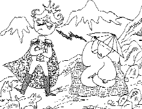
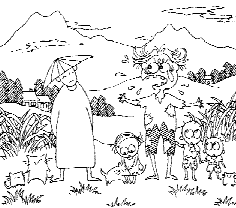

| Une histoire racontée par Maître |
Le 30 janvier 1988 (initialement en chinois) |
 Dans l'Inde d'autrefois, un roi alla présenter ses respects à un saint, un saint authentique et omniprésent qui pratiquait la méthode Guan Yin. Il avait souvent entendu dire que de voir un saint vivant apportait une immense bénédiction et de grands bienfaits, et que les karmas de maintes vies pouvaient être complètement changés. Le roi alla voir le saint et demanda : " J'ai ouï dire que mes karmas seraient changés rapidement après avoir vu un saint. Comment cela se peut-il ? Après, vous avoir vu, quels bénéfices en retirerai-je ? " Le saint répondit brièvement : " Vous récoltez ce que vous avez semé. " Puis, il renvoya le roi à son palais.
Le roi fut très déçu. Il avait entendu dire qu'on pouvait obtenir de grandes bénédictions et d'immenses bienfaits, par le fait de voir un saint vivant. Mais tout ce qu'il avait obtenu était une courte réponse : "Vous récoltez ce que vous avez semé". Il pensa : " Je le savais déjà. Alors, qu'ai-je gagné en allant le voir ? " Il était frustré. Son pays avait une mauvaise réputation, et il avait espéré qu'en allant voir le saint cela irait mieux. Il n'avait pas pensé que le saint ne lui dirait que quelques mots. S'ennuyant, il quitta le palais pour aller chasser. En poursuivant un lapin, il s'enfonça dans la forêt. Fatigué, il s'allongea pour se reposer.
Il rêva qu'il était un pauvre fermier. Il y avait la famine, le village n'avait plus de nourriture. Il avait une douzaine d'enfants, une femme et ses parents à nourrir, mais il était si pauvre qu'il n'y avait plus rien à manger. Désespéré, il sortit chercher de la nourriture. Voyant quelques fruits aigres sur un arbre, il essaya de grimper pour les cueillir. Mais il était si faible qu'il tomba de l'arbre, avant même d'en avoir attraper un. Le chute sortit le roi de son rêve. Il se retrouva allongé sous l'arbre en question, les vêtements pleins de poussière. Il en fut encore plus frustré : " Je n'ai rien gagné en me rendant chez ce saint, et maintenant je fais ce rêve étrange. Il ne faut plus que je le voie. "
Le roi était seul, perdu, séparé de ses sujets, affamé. Il monta à cheval pour chercher de la nourriture. Dès qu'il entra dans un village, une foule l'entoura et cria : " Ah, te voilà ! On t'a cherché partout. Où t'étais-tu caché ? Ta famille meurt de faim. Tu étais supposé aller chercher à manger, mais tu t'es caché et tu as volé ces jolis vêtements et ce cheval. Pourquoi es-tu si méchant tout d'un coup ? "
Le roi était perplexe. " Qu'avez-vous tous ? Je suis le roi ! " Bien sûr, personne ne le croyait : " Comment, oses-tu dire des choses insensées et te dire roi ? " La foule l'entraîna dans le village en lui reprochant : " Tes parents, ta femme et tes enfants meurent de faim ici et tu te fais passer pour un roi. Tu dis vraiment des âneries. " Les villageois pensèrent qu'il était quelque peu étourdi, le battirent et l'admonestèrent. Le roi ne put les convaincre par aucun moyen.
 Puis, soudain, ses sujets arrivèrent et le saint aussi. Le roi implora immédiatement : " Oh saint homme, que se passe-t-il ? Ces gens me prennent pour le mari de cette femme et le père de ces enfants. " Le roi était terrifié à la vue de tous ces enfants. Le saint expliqua : " Comme je te l'ai dit, tu récoltes ce que tu sèmes. " Le roi ne comprenait toujours pas. Il supplia le saint d'en dire plus. " C'était ton destin d'être un fermier souffrant de la faim pendant soixante ans. Tu devais nourrir tes parents, ta femme et tes enfants. Toutefois, parce que tu es venu me voir aujourd'hui, j'ai changé ton destin en cinq, dix minutes de rêve. C'est ce qui s'est passé. " Le roi hocha la tête : "Maintenant, je comprends." Les villageois comprirent aussi et réconfortèrent la famille du fermier : "Il aurait dû être ton mari mais son destin a changé. Il est devenu le roi même s'il ressemble beaucoup au fermier."
Un saint complètement illuminé est capable de changer l'univers tout entier. Il n'y a rien qu'il ne puisse changer. Vous avez sûrement lu dans des textes sacrés qu'un saint totalement illuminé peut réduire la taille de l'univers pour le mettre dans un pore de sa peau. Avez-vous déjà entendu cela ? Maudgalyayana était un arhat (un saint libéré). Il pouvait réduire la taille de deux pays et les mettre dans son bol. Un saint totalement illuminé peut changer le destin. Il peut mettre facilement l'univers dans son cœur sans que personne s'en aperçoive, sans qu'une des milliards de personnes prenne conscience d'être dans un pore de peau d'un saint complètement illuminé. Ceci prouve qu'un saint totalement illuminé possède un pouvoir inconcevable.